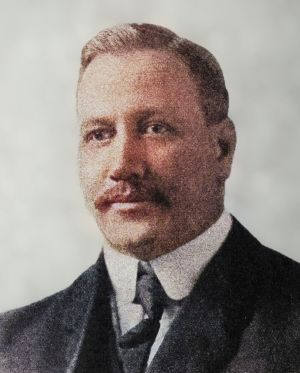

Volleyball was originally invented by William C. Morgan at Holyoke, Massachusetts. He was the physical education director at YMCA when inventing this sport. He was inspired by sport called badminton, that leading to his invention. The first Volleyball name is called Mintonette. He created many rules such as 1.98 meter tall net and many more.